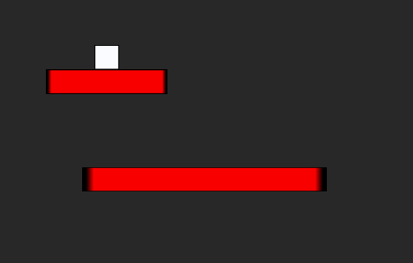

Level Switching
This lesson, explains how to create doors that let the player move to the next level.
Create a New Project
Level Setup
- Create a Player with swept controls
- Create a Level for the player
Door Setup
- Add a new ZilchScript resource named: ‘Door’
- Add the following Property to the Door Script
[Property]
var NextLevel : Level = null;
There is no default level we want to go to when going through a door, so we will define the level to go to in the Door Properties in a bit.
Door Object
- Command:
CreateSpriteor - In Properties Window
- Set Name to: ‘Door’
- Add a BoxCollider Component
- Add a Door component
- Under BoxCollider
- Set the Ghost to: true
Level 2 Setup
Next we will move the player into the other level by making it an archetype.
Player Object
- In Properties Window
- Set Archetype to: PlayerArch
- Left click the Green Upload sign
Now we can create the new level.
- In Library Window
- Goto Level tag
- Rename The current level ‘Level1’
- Create a new level named ‘Level2’
- Create a different set of platforms for Level2
And now will will proceed to add the Player into the game.
- In Library Window
- Goto Archetype tag
- Drag PlayerArch into the Level Window
Now that we have our Level2 made, we can redirect the Level1 door to Level2.

Go back to Level1
Door Object
- In Properties Window
- Under Door
- Set NextLevel to: Level2
- Under Door
Connect player with Door
Finally we must tell Player to load the door’s Level when colliding with the door.
In PlayerController
- Add the following to an OnCollisionStarted event
//when hitting a door, goto the next level if(event.OtherObject.Door != null) { this.Space.LoadLevel(event.OtherObject.Door.NextLevel); }
Return to Level1 and run the project